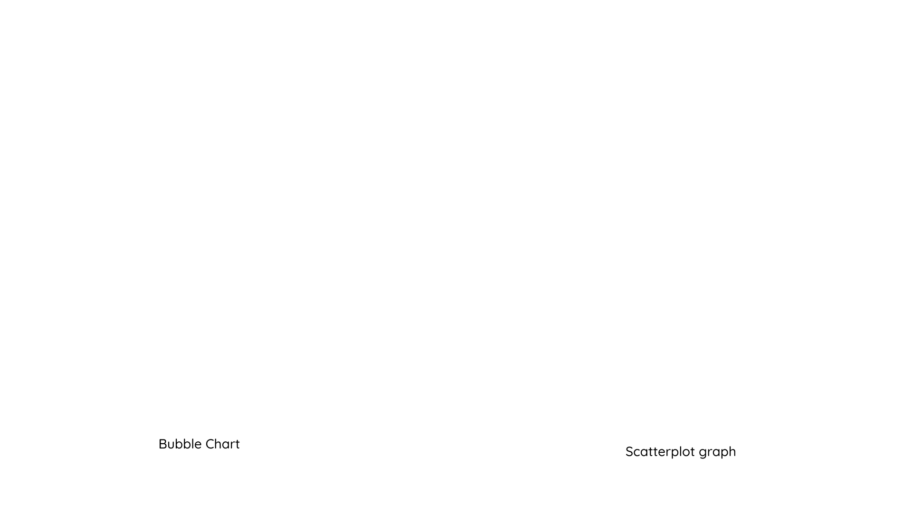

These are the websites I explored to get a feel for what a fan website is:
The One Ring.net
This is a fan website about the Lord of the Rings films. It was created by a group of fans in 1999 and it is still active today. Bringing fans the
latest news on the beloved figures involved in the making of the wildly popular Lord of the Rings movies as well as the newest information available on upcoming
productions, Tolkien-centered events, new publications, and fan gatherings (TheOneRing.net).
I like that the homepage has a full image background.
Office Tally
This is a fan website about the tv show The Office. It was created by Jennie Tan in
2006. On the website, she writes blogs about the show and reviews its episodes, she also writes articles with the latest news about the show and its cast.
I like the idea of reviewing episodes from the show.
The Leaky Cauldron.org
This is a fan website is about the Harry Potter franchise. It was created in 2000 and is still active today. It is an all-purpose site for the Harry
Potter/Wizarding World enthusiast, a destination for fan entertainment and discussion(The Leaky Cauldron.org).
I like that the images, colours and fonts used match the theme of the franchise.
Planning for Data Visualisations

Reflection
The strengths of my website are a consistant colour palette, readable font, and simple navigation. For my portfolio website in Semester 1, I had trouble deciding on a colour
palete and I would constantly change it just to find the one that fits. This time, I chose the colours yellow, navy blue, brown, tan, and white and I stuck to them until the
end. This is because, even before doing the style guide, I went on a lot of colour websites such as Coolors to
find colours that compliment each other as well as my images. I did the same thing with the fonts. In terms of navigation, I have a na menu at the top of each page and a return
to top button at the bottom of each page as well as a next page and previous page button. These items are used in almost every website so they will be secondnature to the user.
The weakness of my website is that I could not create full responsiveness. I have managed to make my website responsive to the mobile and tablet sizes specified in my wirframes
but not for any other size in between. However, for the final exam version of the website, I will work on this. Although the assignment requires responsiveness for just those
sizes, I want my website to be accessible to people with any device. In Semester 1 my website was responsive for specific screen sizes and I couldn't view it properly on my
phone and that disappointed me because I wanted to show my website to people using my phone. I plan to do better for my final website.
[Figure 1: Screenshot of the data journalism project]
Project Overview
In this essay, I will do a critical analysis of the data journalism project titled, The Shape
of Slavery. It was created by Bill Rankin and Matt Daniels, who mapped out the data and
wrote the code, respectively. The data journalism project was published in January 2017
on The Pudding, which is a digital publication that creates visual essays with data (The
Pudding, 2024). The aim of the project is to show the connection between the rate of
incarceration and the population of slaves in the American South (Rankin and Daniels,
2017). This is illustrated through the data visualisation and further expanded in its
accompanying article.
Data Visualisation Techniques
In The Shape of Slavery the data visualisation technique used is a dot map. Dot maps
or dot density maps use the dot symbol to show the distribution of many related
phenomena in geographical space (Synergy Codes, 2024). In this data journalism
project, different sized dots are used to represent the number of incarcerated people
across the United States as well as enslaved people in the deep South.
[Figure 2: Screenshot of the legend/key showing how population is represented]
Other data visualisation techniques include visual scalability, real-time interaction,
and personalization (Bikakis in Li, 2020, p.19). These will be expanded on in the later
sections but in general, they speak to the visualisation being able to effectively display
large amounts of data, the user being able to interact with the visuals, and them being
able to change to how they view the data (Bikakis in Li, 2020, p.19). The reason behind
these choices is that big data is useful when it is represented in an accessible way
(Nkosi, 2020). It is unfathomable how many people were enslaved and incarcerated from
1790 to 2010; therefore, the visualisation helps the user make sense of these large
numbers through its use of colour, patterns and shape language.
Interactivity and User Engagement
The role of interactivity in this project is to communicate with the user and keep them
engaged with the information they are receiving. The interactions available to the user
are clicking, hovering, and scrolling. In the nav bar, when the user clicks inside a box, its
area is filled with a white colour. This action also changes the information displayed on
the map, depending on the date that was selected. Also, when the user hovers over a
date, the text changes from white to blue.
[Figure 3: Screenshot showing the hover effect on the nav bar]
Hovering is also available on the map. When the user hovers over a dot, the area
surrounding it gets highlighted and information is given about the number of people the
dot represents. While clicking and hovering are based on what the user wants to do or
see, scrolling is set up by the designers to automatically take the user through the
visualisation and its different parts. This means that with each scroll, the user will be able
to see the map change without having to click on the nav bar. These interactions are
effective because they show the user that their actions have an effect on the information
they receive.
[Figure 4: Screenshot showing the hover effect on the map]
The impact of interactivity on user engagement is the creation of immersion and
intuitiveness. The user feels involved and present in the moment because they have the
agency to make changes. The interactive elements are also intuitive, for example, when
the user sees the buttons on the nav bar, they know that they are clickable. Over the
years, I have engaged with several data visualisations and most of them were static bar
graphs. In spite of the use of colour and descriptive labelling, I did not feel like I
understood what I was seeing or even cared about what it represents. This is because the
data was just given to me, and I was not able to interact with it or see it in a different light.
Therefore, the impact of interactivity on data interpretation and comprehension is that
users are not just passive consumers, but they are active in obtaining knowledge.
UI/UX Design Principles
The UI/UX design principles present in this data visualisation are clarity, simplicity,
consistency, feedback, usability, hierarchy, and accessibility (Direduryan, 2023). The
information displayed in the visualisation, is clear and easy to understand, also, the map,
nav bar, and legends have simple designs. The colour scheme and layout are consistent,
even when the map’s data changes, and the user gets feedback each time they interact
with the UI elements i.e. the text colour changes when hovering on a date in the nav bar.
The visualisation is usable, because it does not have any no errors or unconventional
interactions. In terms of hierarchy, the most important part of the project is the map, and
it takes up the most space on the page. Another important part is the nav bars and they
also take up a large amount of space in the top left corner. The least important part is the
legends, and they are the smallest elements on the screen. Lastly, this project is
accessible because it has a dark background so it will be easy on the user’s eyes. It is
also accessible to users with different types of colour blindness (see Figures 5-8).
[Figure 5: Screenshot showing how people with Protanopia see the map][Figure 6: Screenshot showing how people with Achromatopsia see the map]
[Figure 7: Screenshot showing how people with Deuteranopia see the map][Figure 8: Screenshot showing how people with Tritanopia see the map]
These UI/UX techniques have significantly influenced the way I interacted with the data
and informed my understanding of it. By having a clear visual hierarchy, I knew what to
focus on and what to ignore. By having a consistent layout and colour scheme I was able
to understand the relationship between the slave populations of 1860 and the population
of incarcerated people in 2010. This is because the colours of the dots remained the
same, so it was easy to build that connection, also, each time the map’s data changed,
the layout remained the same. In general, I found the project to be visually appealing and
it was able to understand the data, which gave me a good user experience.
Data-Driven Storytelling
This project combines narrative elements with data-driven storytelling in the way it
represents the black population and state prisoners for each year. Population is
represented by the coloured dots and state prisoners are represented by white circles on
the map. As seen in Figures 10 and 11, the number of state prisoners was relatively low
in 1910, with the highest being 172, and the number kept increasing until 2010, where the
highest was 868. This creates the narrative that the states with the highest number of
slaves, eventually had the highest black population, and it is where most prisoners are
found. This is further illustrated in Figures 12 and 13, where 12 shows the number of
prisoners across races and 13 shows the number of black prisoners and, in each one,
the highest number of prisoners can be seen in the South.
[Figure 9 & 10: Screenshots showing the number of prisoners in 1910 and 2010][Figure 11 & 12: Screenshots showing the number of prisoners and the number of black prisoners in 2010,
respectively]
Overall, the importance of narrative in communicating complex information is to make it
easy for the user to remember. I was able to remember and understand the significance
of the data because the project represented it with colours and circles, and I would not
have been able to do so had I just read the accompanying article. This is because “by
making the data we want to show, relevant to our audience, it becomes a pivotal point in
our story” (Knaflic, 2015, p.185).
Emotional Impact
The colour palette used in the data visualisation contributes to the serious tone of the
project and the overall message. Firstly, the background colour of the visualisation is
navy blue, therefore, it sets up a dark tone or mood for the user. In the legend, the colours
blue, purple, orange, pink, and yellow represent the number of black inmates. These
colours, besides blue, are described as warm colours and they are conventionally used
to denote danger. Therefore, their use in this project, will show the user that they are
representing something negative as opposed to cool, pastel colours that might represent
something light and positive. In a way, the designers [settled] for establishing the
context for an emotion rather than the emotion itself (Hassenzahl and Tractinsky, 2006,
p.94). This means that instead of expecting users to understand the severity of the
numbers, they associated them with colours so that users can make connections
between their understanding of the colour, and the number it represents.
[Figure 13: Screenshot showing how inmates are represented on the map]
Conclusion
In the analysis of “The Shape of Slavery” I learnt that data visualisation is not just about
displaying appealing visuals, but it is also about constructing meaning or conveying a
narrative. I also learnt that there should be a clear relationship between the different
elements i.e. the shapes, colours, numbers and the graph/map should communicate
with each other. These insights will be applied to my own data visualisation projects in
the future by guiding me not to spend too much time on aesthetics and actually focus on
storytelling and meaning-making.
Hassenzahl, M. and Tractinsky, N. (2006) ‘User experience - a research agenda’, Behaviour & Information Technology,
25(2), pp. 91-97. doi: 10.1080/01449290500330331.
Knaflic, C.N. (2015). Storytelling with Data: A Data Visualization Guide for Business Professionals.
Hoboken, New Jersey: Wiley, pp.165-185. Chapter 7 - Lessons in storytelling.
Nkosi, N.L. (2020). Data Visualisation on the Web. [Lecture] WSOA3028A: Interactive Media. University of
the Witwatersrand. [Accessed 12 Aug. 2024]
Rankin, B. and Daniels, M. (2017). Mapping Slavery Against US Incarceration. [online] The Pudding. Available at:
https://pudding.cool/2017/01/shape-of-slavery/.
[Accessed 29 Aug. 2024].